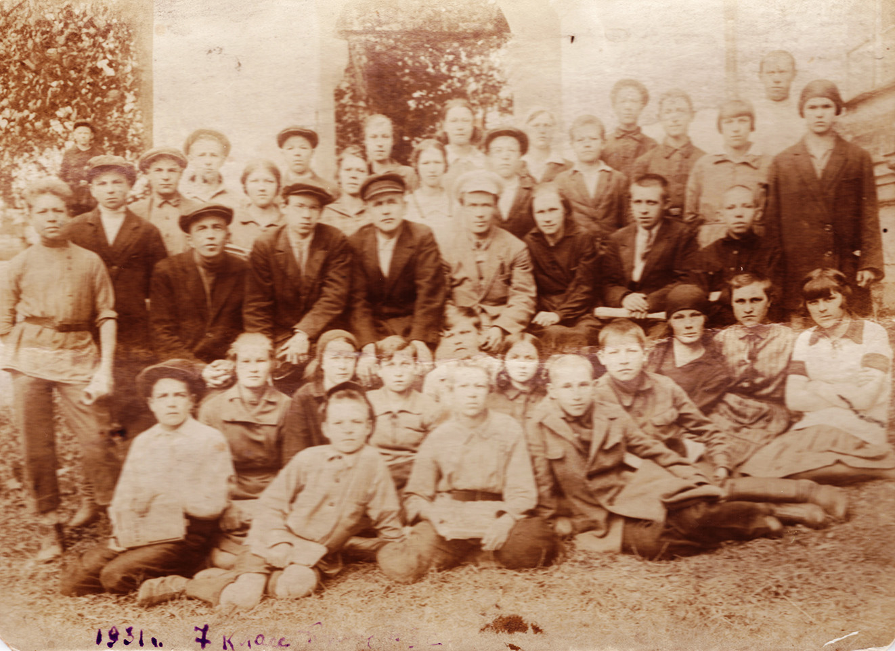
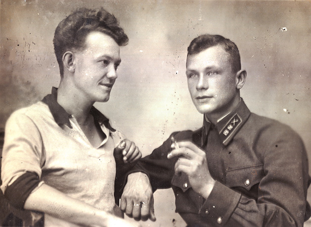
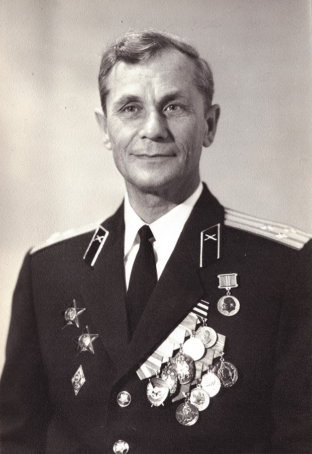
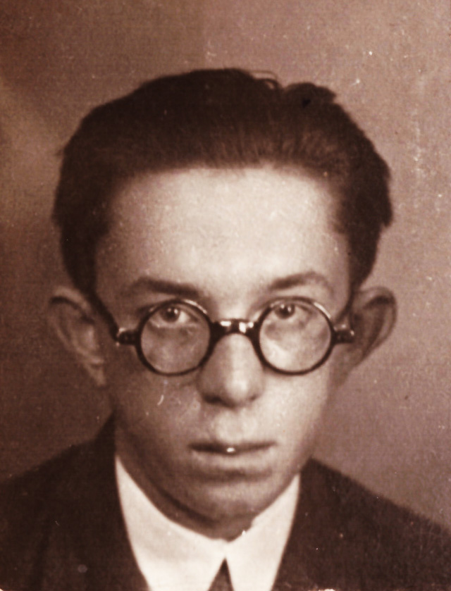
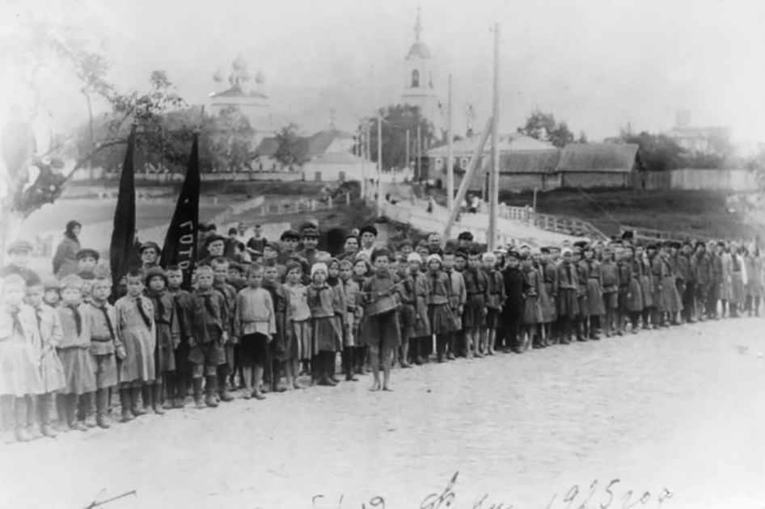
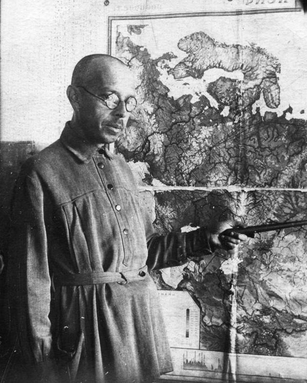

А.Осин с друзьями (стоит 1-й справа). г.Пучеж, 1931г.
Когда я рос, мама держала меня в строгости. Хулиганом я не был, а пошалить и набедокурить мог. Сейчас смотрю на старые фото и вижу окуловских мальчиков и девочек, с которыми мы проводили время в забавах и играх. У меня сложился круг чуть более старших по возрасту друзей – Миша Молин, Петя Мешалкин, Костя Шишкин, а самым близким моим товарищем был Коля Шарапов (ныне Норкин). Мы дружили семьями, ходили в гости друг к другу. В старших классах из окуловских ребят дружил также с Сашей Савичевым, Петей Рыжовым и Колей Малковым. Порядок был такой: по домам друг к другу не ходили, а выкрикивали у окон: «Саша, выходи гулять!». Как-то побывал я в доме Малковых. Отец Коли, Иван Дмитриевич умер рано и оставил жену, тетю Лизу, с четырьмя детьми. Тяжело ей было тянуть хозяйство. При том, что братья мужа Леонид, Павел и Константин жили богато – но помощи семье брата не оказывали. Что, по моему мнению, было не честно. В доме, где жил Коля, стены были неоштукатуренные, посреди стоял качающийся дощатый стол и узкие из досок же скамейки. Не было практически никакой другой мебели, даже стула. За перегородкой – кухонка, где вся утварь лежала на скамейке. Когда нам вручали в школе аттестаты зрелости, мама ему из-за отсутствия белой рубашки погладила нижнюю и он в ней явился на торжественную церемонию. На выпускном фото он именно в ней запечатлён.

А.Осин 1-й справа во втором ряду. Выпуск 7 класса. г.Пучеж, 1931г.

Н.Малков - лейтенант (справа), 1940г.

Н.Малков - полковник. г.Москва, 1970-е
После окончания школы в 1936 году Малков поступил в Рязанское артиллерийское училище, потом много лет служил в Красной Армии, был ранен на войне. Ушёл в отставку полковником, получив в «генштабовском» доме в Москве прекрасную квартиру. Уже в пожилом возрасте я случайно узнал его адрес, и мы договорились встретиться на остановке троллейбуса, недалеко от его дома. Помню, как вышел я из троллейбуса, прошёл метров 50 – мне навстречу идёт незнакомец. Посмотрели друг на друга, потом я развернулся и пошёл обратно – опять взглядами встретились с ним. Окликнул его: «Николай Малков!». Он обрадовался: «Саша, милый!» и, хромая, поспешил навстречу. Мы обнялись и заплакали, а прохожие удивлённо глядели на нас, двух плачущих стариков. Николай познакомил меня с женой Надеждой Павловной, а через некоторое время - и двумя сыновьями. У одного из них был день рождения, после празднования которого на «малковской» даче братья приехали в родительскую квартиру, привезя, к моему удивлению редкие в то время напитки «Фанта» и «Пепси-Кола». Вспоминали мы с Николаем нашу жизнь, начиная с той окуловской ямы, которую мы когда-то в детстве превратили в избушку, где собирались послушать «страшные истории». Вспомнил и про бедность в детские годы. Жизнь его позже наладилась, выросли два сына, старший из которых стал учёным. Но подвело здоровье – через полгода после той нашей памятной и тёплой встречи Николая не стало, а вскоре умерла и его жена. Некоторое время после их смерти я поддерживал контакт с сыновьями – через письма и телефон – но после уже моей болезни связь прервалась.

Михаил Смирнитский, 1936г.
Вообще из моих школьных друзей на сегодня жив только Петр Рыжов. Погибли на войне Костя Шишкин, Петр Мешалкин, Аркадий Леванов, Павел Морсков, Сергей Акифьев. А самым моим близким и надёжным другом с юности и до конца его жизни был Михаил Смирнитский. Нас сближала совместная учеба, поездки на сдачу экзаменов, работа на фабрике, футбол и многое другое. Уже после моего переезда в Кострому при каждом визите на родину, в Пучеж я много с ним общался. Позже он переехал жить в деревню Кунестино Приволжского района Ивановской области, где работал учителем сельской школы, пользуясь авторитетом у местного населения. Но в сравнительно молодом возрасте умер от инфаркта. Выступая на траурном митинге один из родителей учеников сказал: «Это был истинный, настоящий сельский интеллигент, так много сделавший для народа в нашем селении».
А теперь расскажу о моей школьной учёбе. Ещё перед школой, будучи общительным и дружелюбным, я попробовал пойти певчим в церковный хор. Но после первой же спевки, где регент Вахлаков проверил мой слух и голос, был из хора изгнан со словами: «Иди дьякону разводи кадило». Сказано это было в шутку, но я решил, что такая обязанность есть и тем же вечером подошел к настоятелю церкви со словами, что меня прислали кадило разводить. Он посмеялся, дал мне кадило, ладан и спички, сказав где и что класть. По выполнении этого задания дьякон угощал меня ландрином, чему другие мальчишки завидовали. Но вскоре я из церкви убежал в столовую льнопрядильной фабрики, где вёлся приём в пионеры (самые первые пионерские отряды создавались при фабриках и заводах). Меня торжественно приняли в пионеры, я дал клятву (торжественное обещание) и мне повязали пионерский галстук. Нашим пионервожатым был рабочий фабрики Миша Серов – весёлый парень, он хорошо пел и плясал, читал и учил с нами стихи. В тот день я пришёл домой радостный – теперь я пионер! Но мама меня выпорола за то, что сбежал из церкви без спроса. Хотела даже сорвать с меня галстук, но отец не позволил. Он сказал: «Не тронь! У нас с тобой одна дорога, у него другая, он теперь ленинец, пусть и растёт таким». Мать сначала называла галстук «собачьей радостью», а потом отступилась.

Пионерский отряд фабрики им.Кирова. г.Пучеж, 1925г.
В том же году я пошёл учиться в 1 класс. Первой учительницей была Клеопатра Васильевна Лебедева, потом – Елизавета Александровна Кузнецова (по мужу Соболева). Её супруг Алексей Соболев был заведующим нашей Цветковской начальной школы. Позже, когда я работал заведующим Пучежским районо (отделом народного образования), Соболев был инспектором по начальным школам – опытный и полезный «учитель для учителей». Сам давал уроки и показывал, как надо работать. Учёба в начальной школе была трудной, спрашивали с нас строго. Но, глядя на фото нашего 4 класса сейчас вижу, что все мы стали в жизни порядочными людьми. Хотя не все окончили даже семилетнюю школу, но потом прошли различную курсовую подготовку. Из всех на том фото до окончания 10 класса нас добралось только двое – я и Павел Большаков. А глядя на фотокарточку нашего 7-го класса (1931г.) я вспомнил, что около трети из моих одноклассников погибло в войну…
В начальной школе я получал основном «четвёрки», пионером был активным, заводилой в различных делах. Петь и плясать не умел, но музыку любил. Мы часто ходили в походы, ездили на Семёновскую дамбу и смотрели, как наши отцы в горах (т.е. на правом берегу Волги выше Пучежа, где были одни овраги) откалывали огромные камни, укладывали их на маты и топили у острова напротив деревни Семёновское, один слой на другой. Камни замывало песком и в течение ряда лет, слой за слоем соорудили дамбу, которая перекрыла Воложку. Старики говорили, что когда-то небольшие пароходики ходили по Воложке вокруг острова мимо деревни Марково и далее на Волгу чуть выше Катунок. После перекрытия Воложки волжская вода стала сильно бурлить в этом «проносе», что затрудняло судоходство на этом участке. И пароходы, идущие сверху и снизу по Волге, предупреждали гудками друг друга – чтобы «нижние» пропустили «верхних». Таких дамб на Волге было немного, ведь это трудная работа, которая к тому же могла быть напрасной, если течением всё утащит вниз. Спрашивается – зачем я всё это описываю, ведь всё уже давно залито водой Большой Волги после строительства Горьковского водохранилища и ушло в историю. Это просто свидетельства очевидца событий, которые могут кого-нибудь заинтересовать.
К зданию Цветковской начальной школы сделали пристройку, где открыли районный пионерский клуб. В нём широко развернулась кружковая работа, кружки вели родители учеников и комсомольцы с фабрики, без оплаты, «на общественных началах». Члены авиамодельного кружка, в том числе и я, после 7 класса захотели учиться в авиашколе при ивановском аэроклубе, но нас всех завернули из-за возраста. Нам было 14-15 лет, а принимали туда с 16 лет. Запомнились летние пионерские лагеря – сосновый лес, река, рыбалка, ягоды, грибы, походы, массовые игры, а главное – жили в палатках. По ночам старшие пионеры с вожатыми, вооруженные малокалиберными винтовками, охраняли наш покой. Из учителей мне запомнился директор и историк Алексей Васильевич Горбунов, литератор Никитин, который так увлекался своим предметом на уроке, что можно было тихонько уйти и он бы не заметил. Немецкий язык – Михайленко Алексей Александрович, физика – Афанасьев Виталий Александрович, химия – Лебедев Сергей Александрович, математика – Рукавишникова Любовь Дмитриевна и ещё два «особых» преподавателя Сидоров Павел Фёдорович и его жена Дикарева Юлия Ивановна (в школе вводили обучение психологии и политэкономии). Мою любимую географию преподавал Владимир Дмитриевич Воскресенский. Учителя были грамотные, хорошо знавшие свой предмет и умевшие его преподать. Они были уже в годах и хорошо знали жизнь, что отличает их от большинства нынешних молодых учителей.

В.Д.Воскресенский. г.Пучеж, 1938г.
Когда нам исполнилось 14 лет, то 5 пионеров-активистов, включая меня, были «торжественно переданы из пионеров в комсомол». Сразу же райком комсомола утвердил нас отрядными вожатыми и закрепили за отрядами. Помню очень энергичную секретаря райкома Надю Бойцову. Как она проводила семинары со старшими пионерами и пионервожатыми, обучая работе с пионерами – развивать любознательность, желание трудиться и помогать старшим во всех делах! До сих пор помню слова В.И.Ленина как напутствие нам, вожатым:
«Наши отцы боролись, и они боролись часто в одиночку. Мы, наше поколение, научились лучше бороться, наши дети научатся ещё лучше, чем мы, бороться, и они победят».
Под этим ленинским девизом росли мы и растили тех, кто моложе нас. А это те ребята, которые построили социализм (пусть и с ошибками – но ошибается лишь тот, кто ничего не делает), сумели в годы войны защитить страну и затем восстановить разрушенное войной народное хозяйство. Меня по жизни очень увлекла работа с пионерами, и я серьёзно стал изучать статьи В.И.Ленина и Н.К.Крупской о пионерском движении. Также читал Макаренко, Шацкого, Сухомлинского и др. В 1932 году после окончания 8 класса райком комсомола направил меня старшим пионервожатым в фабричные пионерские лагеря. А с 1935 года я был утверждён начальником пионерских лагерей в местечке Кресты (там тогда была церковь) перед Катунками, на правом берегу Волги. Вначале дела шли хорошо, фабрика заказала для пионеров синие рубашки-безрукавки, а девочкам – синие платья, с красными галстуками это смотрелось очень красиво. Но случилось чрезвычайное происшествие. Уехал я в Пучеж за продуктами, на время отсутствия оставил за себя старшего пионервожатого. За эти 3 дня, что меня не было, пионеры ограбили церковь – утащили разноцветные красивые ризы. А девочки из них пошили головные уборы - «чаплашки». Когда церковные служители обнаружили пропажу у детей на головах, то заявили в отделение милиции в поселке Васильево. И меня, приехавшего в лагерь с продуктами, сразу увезли на допрос, кричали, стыдили и угрожали судом. А я ничего не знал. С фабрики приехала зам. директора Александра Арсентьевна Чумакова, отругала меня сказав, что за ризы придётся платить. Ущерб фабрикой был возмещён, а меня и старшего вожатого выгнали из лагерей и наказали. В тот момент я работал на фабрике и был заместителем секретаря комитета комсомола. Я отказался было от должности, но меня не освободили, поскольку всё случилось в лагерях в моё отсутствие. А в следующем году фабрика перенесла пионерские лагеря в другое место.